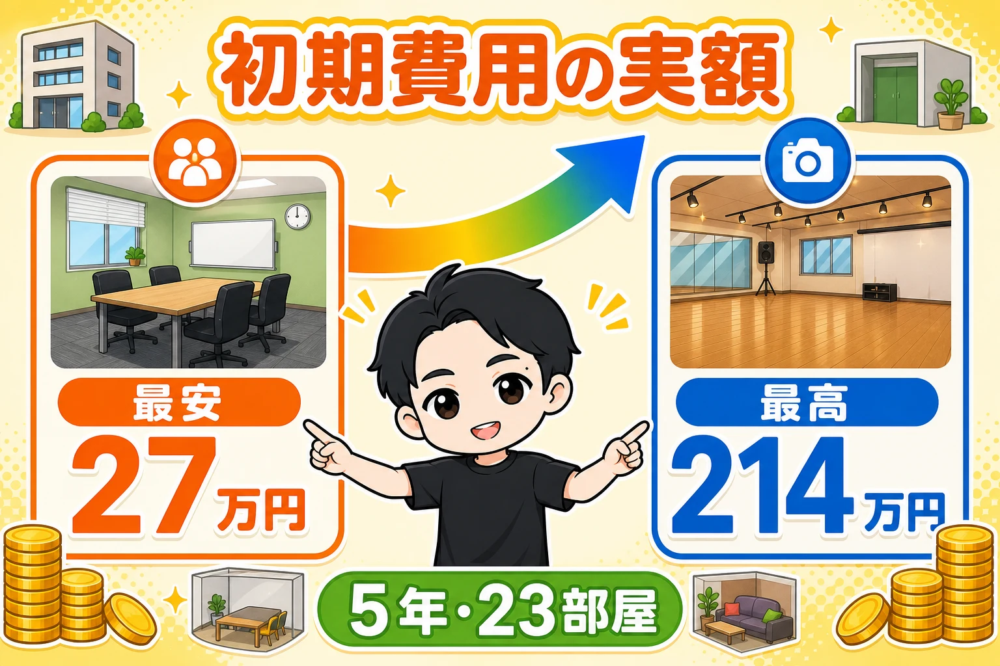
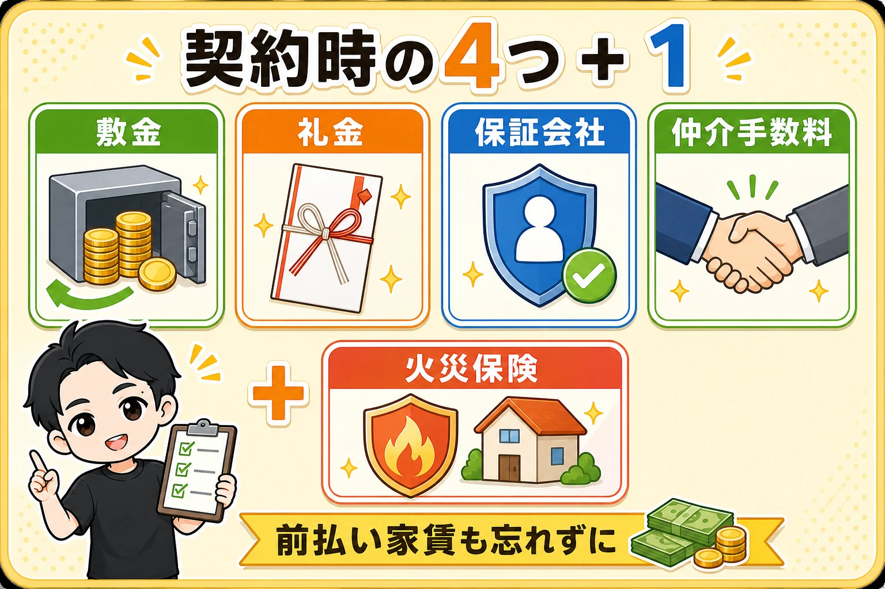
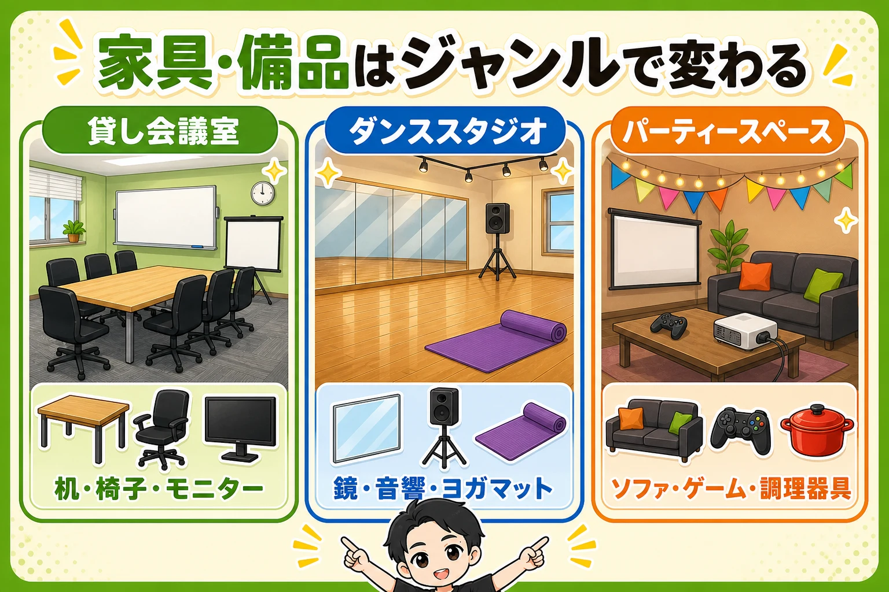

レンタルスペースの初期費用は、27万円から214万円でした。
これは私が5年で23部屋を出してきた、実際の幅です。
一番安い部屋が27万円、一番高い部屋が214万円。
広さも、業態も、敷金礼金の月数も違うので、当然といえば当然です。
でも「いくらかかるの?」と聞かれたら、この幅を先に知ってほしい。
今日は、この差がどこから生まれるのかを全部分解します。

まず、広さでざっくり掴む
細かい話の前に、目安を置いておきます。
- 20平米くらいの小箱なら、100万円以内で出せます
- 30〜40平米以上なら、150〜200万円くらい
ちなみに最安だった部屋は、貸し会議室でした。
家賃5万円で、敷金・礼金がゼロの物件だったんです。
内訳はこうです。
- 仲介手数料 5万円
- 保証会社 5万円
- 火災保険 2万円
- 家具・備品 約15万円
締めて約27万円。
「安っ」と話していたのを覚えています。
敷金と礼金がゼロだと、ここまで下がります。
小箱なので、置きたくても置けるものが少ないという事情もありました。
初期費用の式は、3つだけ
何にお金がかかるのか。
式はこれだけです。
契約関連のお金 + 内装 + 家具備品。
順番に分解します。
① 契約のとき、4つ+1つのお金がかかります

敷金
0ヶ月〜6ヶ月まで、物件によって幅があります。
「保証金」と呼ばれることもあります。
基本的には、退去のときに返ってくるお金です。
礼金
こちらは返ってこないお金です。
保証会社
家賃の支払いが滞ったとき、オーナーさんに立て替え払いをしてくれる会社です。
ここに家賃1ヶ月分ほどかかります。
契約前の「審査」は、この保証会社の審査です。
大きな問題がなければ、会社員はもちろん、個人事業主でも法人でも普通に通ります。
安心してください。
仲介手数料
不動産の仲介業者さんに払うお金です。
0.5ヶ月や無料の業者もありますが、基本は1ヶ月分と見てください。
火災保険
2年で2万円、1年で1万円くらいのイメージです。
あと、契約時には前払い家賃も1ヶ月分払います。
これは初期費用というよりランニングコストなので今回は計算に入れませんが、契約の場で出ていくお金としては存在します。
手元の現金を用意するときは、忘れないでください。
それから、物件によっては鍵交換が2〜3万円かかります。
さらにイレギュラーですが、クリーニング代・抗菌消臭代・書類作成費などが乗ることもあります。
私の場合で2〜6万円程度でした。
契約書と見積書に見慣れない項目があったら、その場で聞いてください。
例: 家賃10万円の物件なら、契約関連は約42万円
計算してみます。
家賃10万円、敷金1ヶ月・礼金1ヶ月の物件の場合。
敷金1+礼金1+仲介手数料1+保証会社1=4ヶ月分で40万円。
そこに火災保険の2万円を足して、約42万円。
これが契約関連のお金です。
※ここに、消費税がのります。
事業用(店舗・事務所)で借りる場合、消費税がかかる項目とかからない項目が分かれます。
- かかるもの…礼金、仲介手数料、家賃(前払い分)、共益費、鍵交換代
- かからないもの…敷金(返ってくるお金なので、そもそも消費税の対象外)、保証会社の保証料(非課税)、火災保険料(非課税)
礼金・敷金の境目はシンプルで、「返ってこないお金かどうか」です。
さっきの42万円でいうと、消費税がのるのは礼金10万円と仲介手数料10万円の2つだけ。
2万円が足されて、税込で約44万円になります。
見積書を見るときは、この2つに税が乗っているかを確認してください。
(ちなみに住宅として借りる場合は、家賃も礼金も非課税です。仲介手数料だけは課税されます)
契約書で必ず見る言葉「敷引き」
1つだけ、絶対に確認してほしい言葉があります。
「敷引き(償却)」です。
敷金は返ってくるお金、と言いました。
でも契約書に「敷引き1ヶ月」と書いてあったら、敷金3ヶ月のうち1ヶ月分は最初から返ってきません。
実質、礼金が増えているのと同じです。
※敷引き分には、消費税がかかります。
返ってこないと決まった時点で、礼金と同じ扱いになるからです。
「敷金だから非課税」ではないので、見積書の数字がずれていたらここを疑ってください。
契約前に「敷引きはありますか?」と、ひとこと聞いてください。
敷金・礼金は、交渉できます
他の物件と比べて高いなと思ったら、交渉してください。
特に敷金です。
オーナーさんからすれば、敷金は仮受金——預かっているだけで、いずれ返すお金です。
だから交渉のハードルが低い。
ここが下がれば、契約時に一時的に出ていく現金が減ります。
(逆に言えば、敷金はゆくゆく返ってくるお金なので、本質的には「消えるお金」ではありません)
礼金も高ければ交渉の余地はあります。
ただし人気物件だと、オーナーさんが強気なこともあります。
そこはバランス感覚で判断してください。
【注釈】オーナーさんが「免税事業者」だと、少し話が変わります
ここは細かい話なので、消費税を自分で申告している人だけ読んでください。読み飛ばしても出店には影響しません。
家賃には消費税がのる、と書きました。
でもオーナーさんが免税事業者(消費税を納めていない、小規模な大家さん)だと、インボイス(適格請求書)が発行されません。
このとき、あなたが払った家賃の消費税分を、自分の消費税の計算で全額は差し引けなくなります。
差し引ける割合は年々下がっていく決まりです。
- 2026年9月30日まで … 80%
- 2026年10月1日から … 70%
- 2028年10月から50%、2030年10月から30%、2031年10月に終了(0%)
対策はかんたんです。
契約前に「インボイスの登録番号はありますか」と不動産屋さんに聞くだけ。
同じような条件で2物件迷ったら、登録番号がある方が実質的に少し得になります。家賃交渉の材料にもなります。
なお家賃は口座振替で、毎月の請求書が来ないことがほとんどです。
その場合は登録番号が書かれた契約書＋通帳をセットで保管しておけば大丈夫です。契約書に番号がなければ、あとから通知をもらって契約書と一緒に保管してください。
※簡易課税や2割特例を使っている人、そもそも消費税を納めていない人(免税事業者)には関係ありません。
※保証会社の保証料はもともと非課税なので、こちらはインボイスの心配は不要です。
※この記事は税理士による助言ではありません。実際の申告処理は顧問税理士さんに確認してください。
② 内装は「そのまま使う」が私の基本
内装費の話です。
私の考え方は、はっきりしています。
基本、いじりません。
理由は2つ。
レンタルスペースは、いかに初期費用を抑えて、即回収して、利益を積み上げるかの商売だと思っているから。
もう1つは、手を入れると退去時の原状回復が出てくる可能性があるからです。
ただし、これは絶対の正解ではありません。
付加価値をつけて単価を取る戦略なら、こだわるべきです。
そこは経営判断。自分の考えでやってください。
内装でお金がかかるのは、この4つです。
- 床材
- 壁紙
- 照明関連
- トイレ(和式なら洋式化。スワレットを入れるなど)
金額は1平米あたりの相場感で決まるので、施工する範囲=部屋の広さでざっくり見積もれます。
しかも、電気工事以外は自分でできます。
床材も壁紙もネットで買えますし、特にクッションフロアは専用の両面テープでYouTubeを見ながら敷けます。
お金を浮かせたいならDIYも検討してください。
③ 家具・備品は、ジャンルで全然違う

最後が家具・備品です。
ここは出すジャンルで大きく変わります。
貸し会議室
長机、椅子、プロジェクター、外付けモニター、ホワイトボード、ラック、など
ダンススタジオ
鏡、音楽プレイヤー、ヨガマット、モニター、トレーニング用品、など
この鏡が、初期費用を大きく左右します。
実額を出します。
- 業者さんに貼ってもらった店: 53万3,500円(幅6〜7m)
- 自分で立てかけるタイプなら: 20万円台
- 最初から鏡が付いていた店: 0円
私の店は、鏡代がゼロの部屋が2つあります。
最初から鏡が付いている物件を借りたからです。
ダンススタジオをやるなら、これがいちばん効く節約です。
物件を探すときは「鏡付き」を条件に入れてみてください。
パーティースペース
ゲーム機・ソフト、プロジェクター、ボードゲーム、ソファ、テーブル、調理器具、など
何をどこまで置くかで、コンセプトも売れ方も変わります。
だから幅が大きい。
じゃあ何を揃えればいいのか。
答えは、競合の部屋にあります。
出店前に競合を視察して、写真と動画をしっかり撮ってください。
そこに置いてあるものが、そのまま「あなたの店に必要なもの」のリストになります。
視察しないで出店するのは、ありえません。
詳しいやり方は競合視察の記事に書いています。
出した金額は、何ヶ月で戻ってくるか
初期費用が出せたら、次はセットで回収期間を見ます。
私の実績では、1店舗の手残りは平均で月10万円です。
初期費用100万円なら、10ヶ月。
ここで、2通り計算してみてください。
- 敷金を含めた総額で割った場合(実際に用意する現金ベース)
- 敷金を除いた額で割った場合(戻ってくるお金を引いた実質ベース)
敷金の分だけ、実質の回収は早くなります。
この2本を出しておくと、判断がぶれません。
シミュレーターを作りました
とはいえ、毎回この計算をするのは面倒です。
なので、家賃・広さ・業態・置きたい備品を入れるだけで概算が出るシミュレーターを作りました。
入れる数字はあくまで相場です。
本当の金額は見積もりを取らないと出ません。
でも、競合視察とセットで使えば精度は上がります。
「この部屋なら、だいたいこのくらい」が10秒でわかります。
まとめ: 計算してから、契約する
初期費用の式をもう一度。
契約関連(家賃の約4ヶ月分+火災保険)+内装(床・壁・照明・トイレ)+家具備品(ジャンル別)。
20平米の小箱なら100万円以内。
30〜40平米以上なら150〜200万円。
私の実際の幅は、27万円から214万円でした。
大事なのは、この計算を契約の前にやることです。
いくらかかるかを先に出して、それから出店する。
順番さえ守れば、開業資金で失敗することはありません。
まずは、あなたが気になっている物件の家賃を入れて、契約関連の4ヶ月分を出してみてください。
▼もう1つの副業、AI社員だけのeBay輸出店の実録🐹
https://note.com/cham_ebay
▼ブログ(レンスペ×eBay、全記事まとめ)
https://rental-space.net